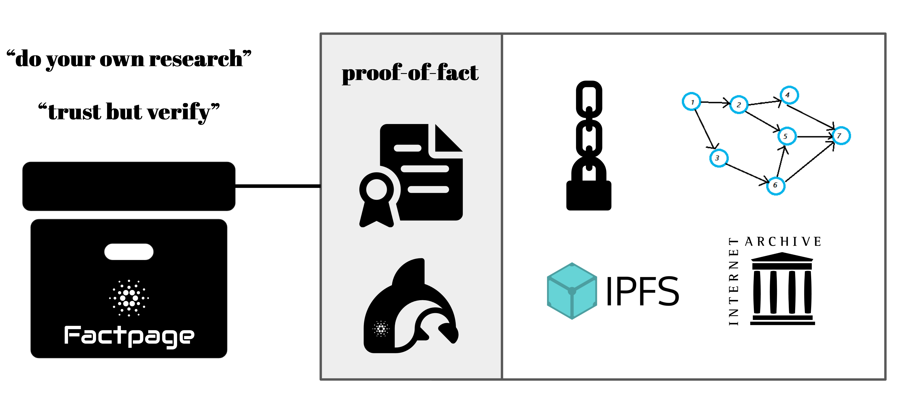
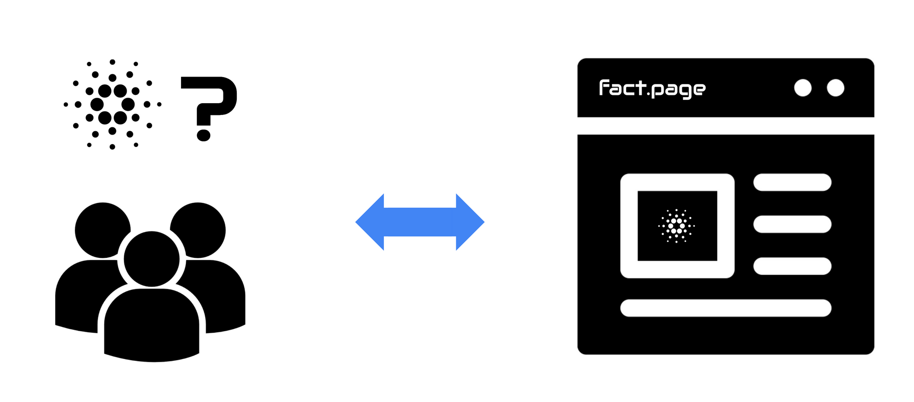

Factpage is an Orcfax subproject that is introducing a trustworthy media archive and website explorer which contains information about Cardano from reliable sources. It will leverage Orcfax's innovative decentralized recordkeeping architecture and "proof-of-fact" design to build the Factpage archival storage and verification component.
Factpage is applying for a Project Catalyst Fund 7 grant in the "Disarm cyber disinformation attacks" challenge for seed funding. See the Ideascale website for the full proposal.
Please give this project your vote in the Project Catalyst Fund 7 round if you'd like to see this service made available to the Cardano community.
